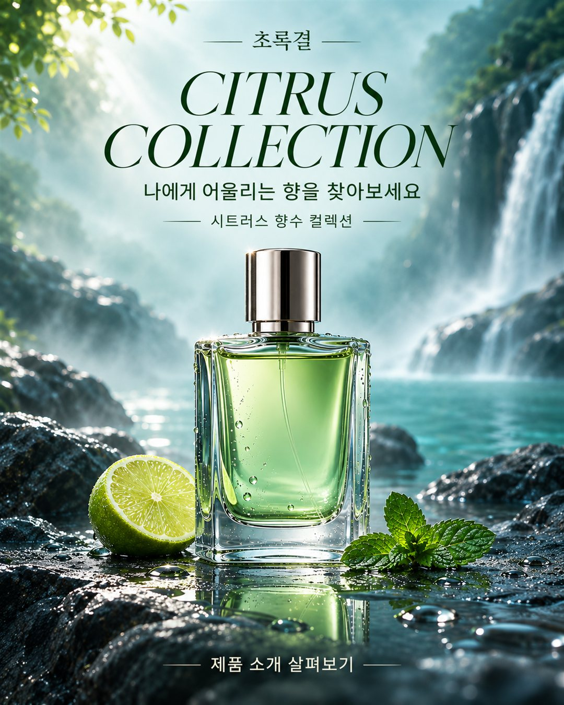

한눈에 알리기
대표 사진과 제목으로 무엇을 소개하는지 빠르게 보여 줍니다.
기획할 것: 한 가지 메시지와 가장 잘 보여 줄 사진
수업용 크기 1080 × 1350 · 4:5AI 스마트스튜디오
등록하신 이름을 입력하면 강의자료를 볼 수 있어요.
* 등록일로부터 4주(28일) 동안만 접속할 수 있습니다.
DAY 03AI 스마트스튜디오
누구에게 무엇을 알릴지 정하고, 피드·캐러셀·스토리에 맞게 내용과 순서를 기획합니다. 필요한 사진과 문구를 만든 뒤, 기획한 내용이 잘 전달되는지 확인하고 고칩니다.
앞으로는 원하는 캐릭터·제품·배경을 이미지로 먼저 준비하고, 그 이미지에 움직임을 더해 영상 장면을 만드는 방식을 배웁니다. 이를 이미지 투 비디오(image-to-video)라고 합니다.
대상의 형태 · 배경 · 구도 · 빛
무엇이 어떻게 움직일지 요청하기
영상의 출발이 되는 이미지에서 제품 모양이 달라지거나 주인공이 잘 보이지 않으면, 원하던 영상을 만들기 어렵습니다. 제품 모양이 정확하고, 주인공과 배경이 원하는 모습으로 보이는 이미지를 먼저 준비해야 합니다. 그래서 이미지를 만들고 고치는 방법을 먼저 배우고 있습니다.
글만으로 영상을 만드는 방법도 있습니다. 이 과정에서는 이미지로 모습을 먼저 정하고 영상으로 연결하는 방법을 함께 배웁니다. 이미지를 준비한 뒤에는 대상과 카메라가 어떻게 움직일지 정합니다.
같은 제품의 구도·빛·분위기·화풍을 바꾸고 비교했습니다.
피드·캐러셀·스토리에서 무엇을 전할지 먼저 정합니다. 그다음 필요한 사진과 문구를 만들고, 기획한 내용이 전달되는지 확인합니다.
오늘은 광고를 볼 사람이 무엇을 궁금해할지 생각하고, 어떤 내용을 어떤 순서로 보여 줄지 정합니다. 기획을 바탕으로 사진과 문구를 요청하고, 만든 광고가 그 내용대로 읽히는지 확인합니다.
이미지 기반 영상의 원본 이미지와 움직임 요청: Google 공식 제작 가이드
같은 상품을 알리더라도 한눈에 보여 줄 때와 여러 장으로 설명할 때는 필요한 내용이 다릅니다. 피드와 스토리는 광고가 보이는 위치이고, 캐러셀은 여러 장을 넘겨 보는 형식입니다. 수업에서는 아래 세 가지를 비교해 만듭니다.
대표 사진과 제목으로 무엇을 소개하는지 빠르게 보여 줍니다.
기획할 것: 한 가지 메시지와 가장 잘 보여 줄 사진
수업용 크기 1080 × 1350 · 4:5장마다 새 내용을 보여 주며 상품·서비스를 설명하거나 고르는 방법을 안내합니다.
기획할 것: 표지, 장별 역할, 읽는 순서, 마지막 안내
수업용 5장 · 각 1080 × 1350 · 4:5휴대폰 세로 화면에서 핵심 내용과 문의·방문 안내가 바로 보이게 만듭니다.
기획할 것: 가장 먼저 읽을 한 문장과 남길 정보
수업용 크기 1080 × 1920 · 9:16| 가상의 달빛책방 독서 모임이라면 | 무엇을 보여 줄까요? |
|---|---|
| 피드 한 장 | “토요일 한 시간, 같이 책 읽어요”와 모임 소개 |
| 캐러셀 | 책 읽기를 미루는 상황, 모임 소개, 진행 방법, 참가 준비, 문의 안내 |
| 스토리 한 장 | 이번 토요일 오후 2시라는 일정과 참가 문의 |
같은 사진을 다시 쓸 수는 있어도, 세 형식에 같은 문구를 그대로 넣을 필요는 없습니다. 형식마다 무엇을 남기고 뺄지 먼저 고릅니다. 오늘은 광고에 쓸 디자인을 제작하며, 실제 광고 등록이나 결제는 진행하지 않습니다.
릴스용 영상 광고는 움직임·소리·장면 순서를 함께 기획합니다. 배너는 짧은 제목과 좁거나 긴 화면의 배치가 중요합니다. 가게 포스터는 멀리서 읽히는 제목과 방문 안내가 필요합니다. 영상 제작은 뒤 수업에서 이어서 배웁니다.
2026년 11월 확인 · 위 크기는 수업용 작업 기준입니다. 실제 집행 전에는 노출 위치에 맞는 규격과 미리보기를 확인하세요. Meta 공식 안내: 피드 이미지 · 피드 캐러셀 · 스토리 이미지
아래에서 오늘 세 가지 형식으로 광고할 주제 하나를 고릅니다. 같은 가게·상품·서비스로 진행하며, 형식에 따라 소개할 내용과 순서를 바꿔 봅니다. 카드에 적힌 내용은 내 상황에 맞춰 바꿔도 됩니다.
새로 나온 소금빵 소개
출근길에 들르는 동네 손님함께 먹기 좋은 구이 메뉴 소개
저녁 모임 장소를 찾는 사람우리 가게 시그니처 음료 소개
잠깐 쉬어 갈 곳을 찾는 사람마음을 전할 꽃다발 소개
선물을 준비하는 사람내게 어울리는 헤어스타일 소개
분위기를 바꾸고 싶은 사람계절에 어울리는 네일 디자인 소개
손끝을 꾸미고 싶은 사람운동을 시작하는 사람을 위한 공간 소개
운동이 처음인 사람초보자를 위한 수업 소개
새로운 운동을 찾는 사람반려견 미용 공간과 서비스 소개
미용실을 찾는 보호자책상을 꾸밀 문구와 소품 소개
기록하고 꾸미기를 좋아하는 사람직접 만들어 보는 원데이 클래스 소개
새로운 취미를 찾는 사람편안하게 머무를 공간 소개
가까운 곳으로 여행을 떠나는 사람내 가게·상품·개인 활동을 골라도 됩니다. 실제 사진이 없다면 가상의 가게로 정하고 Gemini에서 재료 이미지를 만듭니다. 업종은 하나로 정하고, 이후 실습에서도 같은 주제를 사용하세요.
가상 가게의 이름과 소개할 대상은 직접 정합니다. 실제 상품을 홍보한다면 모양·제공 내용·운영 정보를 실제와 맞춥니다. 가상 광고는 연습 결과물로 저장합니다.
본문 예시는 목록에 없는 업종인 가상의 책방을 사용합니다. 설정과 기획 예시를 내려받아 볼 수 있습니다. 그대로 복사하기보다, 어떤 사실을 어떤 순서로 보여 줬는지 살펴보세요.
실습 SET 01
사진을 만들기 전에 광고를 볼 사람과 알릴 내용을 정합니다. “카페 광고”보다 “점심 뒤 쉬어 갈 곳을 찾는 사람에게 우리 가게의 좌석과 음료를 소개한다”처럼 상황을 좁혀 보세요.
실습 SET 02
캐러셀은 장마다 다른 사진을 넣는 것만으로 완성되지 않습니다. 첫 장에서 관심을 갖고, 다음 장에서 궁금한 내용을 읽고, 마지막 장에서 무엇을 하면 되는지 알 수 있도록 순서를 정합니다.
아래 세 방법 중 하나를 고릅니다. 상품을 소개한다면 고르는 방법을, 공방 수업이나 서비스를 소개한다면 이용 순서를 알려 주는 방식도 좋습니다.
| 장 | 이 장에서 할 일 |
|---|---|
| 1장 | 보는 사람이 겪는 상황이나 궁금증 |
| 2장 | 그 상황과 연결되는 상품·서비스 소개 |
| 3장 | 이용하는 모습이나 진행 방법 |
| 4장 | 선택 전에 알아둘 구체적인 정보 |
| 5장 | 기억할 내용과 문의·방문 안내 |
| 장 | 이 장에서 할 일 |
|---|---|
| 1장 | 고를 때 생기는 질문 |
| 2장 | 첫 번째로 살펴볼 기준 |
| 3장 | 두 번째로 살펴볼 기준 |
| 4장 | 어떤 상황에 무엇이 어울리는지 |
| 5장 | 선택을 돕는 안내와 문의 방법 |
| 장 | 이 장에서 할 일 |
|---|---|
| 1장 | 무엇을 해 볼 수 있는지 |
| 2장 | 이용 전에 준비할 것 |
| 3장 | 첫 번째 이용 순서 |
| 4장 | 다음 순서와 알아둘 점 |
| 5장 | 신청·예약·문의 안내 |
| 장 | 제목 | 새로 알려 줄 내용 | 사진 |
|---|---|---|---|
| 1 · 표지 | 읽고 싶은 책, 자꾸 미루고 있나요? | 보는 사람의 상황을 질문합니다 | 책과 빈 의자 |
| 2 · 소개 | 토요일 한 시간, 같이 읽어요 | 각자 책을 가져와 함께 읽는 모임 | 대표 사진 재사용 |
| 3 · 방법 | 먼저 읽고, 이야기는 편하게 | 먼저 조용히 읽고, 마지막에는 원하는 사람만 대화 | 글자 중심으로 구성 |
| 4 · 준비 | 읽고 싶은 책 한 권이면 됩니다 | 오후 2시, 최대 6명, 말하기는 선택 | 책을 가까이 보여 주기 |
| 5 · 안내 | 이번 토요일, 함께 읽을까요? | 자리를 준비할 수 있도록 미리 참가 문의 | 첫 장 사진 재사용 |
실제 광고에서는 처음 보이는 카드가 달라질 수 있습니다. 각 장에도 가게 이름이나 소개할 대상을 알아볼 수 있게 넣고, 집행할 때 카드 순서와 미리보기를 확인합니다.
실습 SET 03
캐러셀 기획을 바탕으로 피드 한 장과 스토리 한 장을 정합니다. 다섯 장의 내용을 한 화면에 모두 옮기면 글자가 많아집니다. 형식에 맞게 필요한 말만 고릅니다.
| 달빛책방 예시 | 선택한 내용 |
|---|---|
| 피드 | 토요일 한 시간, 같이 책 읽어요 — 무슨 모임인지 먼저 소개 |
| 캐러셀 | 누구를 위한 모임인지, 어떻게 진행되는지, 무엇을 준비할지 설명 |
| 스토리 | 이번 토요일 오후 2시 — 일정과 참가 문의를 간단히 안내 |
실습 SET 04
기획이 정해졌으면 제목을 소리 내어 읽어 보세요. 평소 가게에서 손님에게 하지 않을 말이거나, 어떤 상품에도 붙일 수 있는 문장이면 구체적으로 바꿉니다.
“일상에 새로운 영감을 더하는 특별한 시간”
“토요일 한 시간, 같이 책 읽어요”
사진으로 이미 보이는 모습을 문장으로 길게 반복할 필요는 없습니다. 사진은 상품·공간·이용 모습을, 문구는 소개할 내용과 필요한 안내를 맡도록 고릅니다.
정리된 기획은 메모장이나 문서에 복사해 둡니다. 이미지를 만들다가 문구가 바뀌면 기획에서도 같은 부분을 고칩니다.
실습 SET 05
최종 기획에서 필요한 사진을 확인합니다. 대표 사진, 가까이 보여 줄 부분, 이용 장면 중 실제로 쓸 것만 준비합니다. 같은 사진을 피드·캐러셀·스토리에 다시 써도 됩니다.
| 기획에 필요한 것 | 준비하는 방법 |
|---|---|
| 대표 상품·공간 사진 | 직접 찍은 사진이나 사용할 수 있는 사진을 고릅니다 |
| 제품의 디테일 | 원본 일부를 크게 쓰거나, 꼭 필요할 때 새 장면을 만듭니다 |
| 이용하는 모습 | 기획에 그 장면이 있을 때만 별도로 준비합니다 |
| 이용 방법·준비물 안내 | 사진 없이 글자 중심으로 구성할 수도 있습니다 |
실제 상품을 소개한다면 실제 모습을 기준으로 합니다. 사진이 없다면 가상 상품·공간으로 실습하세요. 서비스 업종은 도구나 공간을 보여 줘도 됩니다.
만든 사진을 내려받아 둡니다. 이후 같은 대상을 만들 때 참고 사진으로 사용합니다.
실습 SET 06
어느 사진에서 무엇을 가져올지 알려 줍니다. 대상 사진과 배경 사진을 합칠 때도 기획에서 정한 위치와 글자 자리를 함께 요청합니다.
기존 사진을 그대로 써도 광고에 맞으면 합성할 필요는 없습니다. 배경을 바꿔야 한다면 직접 찍은 공간 사진을 쓰거나 아래처럼 필요한 배경을 만듭니다.
배경 사진도 내려받습니다. 다음 요청에서 대상 사진을 먼저, 배경 사진을 두 번째로 첨부하세요.
문제가 있으면 14번 수정 방법을 사용합니다. 잘 나온 사진은 글자 없는 상태로 저장하고 다음 제작에서 다시 씁니다.
실습 SET 07
피드는 무엇을 소개하는지 한눈에 보이게 만듭니다. 기획에서 정한 대표 사진, 제목, 짧은 설명과 안내를 준비하세요. 글자는 슬라이드에서 직접 넣으면 정확하게 고칠 수 있습니다.
제목을 가장 크게 두고, 설명과 안내는 그보다 작게 둡니다. 사진 속 상품이나 공간을 글자로 가리지 않도록 합니다.
원본 사진과 완성 광고를 비교해 보세요. 유지한 제품 모습, 제목 자리, 글자와 배경의 대비를 살펴봅니다.

크게 보기파일 → 다운로드 → PNG 이미지로 내려받아 03_피드_이름.png로 저장합니다. 편집할 슬라이드 원본도 남겨 둡니다.
메뉴 이름은 업데이트에 따라 다를 수 있습니다. 페이지 크기: Google 슬라이드 공식 도움말.
실습 SET 08
5번에서 정한 순서대로 만듭니다. 사진이 달라지는 것보다 장마다 알려 주는 내용이 달라지는지가 중요합니다.
피드 작업 파일에서 장을 복제해 캐러셀 다섯 장을 준비합니다. 제목 글꼴·색·위치는 공통으로 맞춥니다. 표지는 제목을 크게, 설명 장은 읽기 편하게 구성해도 됩니다.
| 사진을 다시 만들 필요가 없는 경우 | 이렇게 활용하기 |
|---|---|
| 첫 장과 마지막 장에 같은 상품을 보여 줍니다 | 대표 사진을 다시 사용하고 문구만 역할에 맞게 바꿉니다 |
| 제품의 한 부분을 설명합니다 | 같은 사진을 크게 배치해 그 부분을 보여 줍니다 |
| 진행 순서나 준비물을 설명합니다 | 단색 바탕에 짧은 글과 번호를 배치할 수 있습니다 |
| 실제로 다른 이용 장면이 필요합니다 | 그 장면에 쓸 사진만 새로 준비합니다 |
제목과 설명은 최종 기획표에서 가져옵니다. 설명을 넣다가 한 장이 빽빽해지면 문장을 줄이거나 내용의 위치를 바꿉니다. 빈 장을 채우려고 비슷한 문구를 반복하지 않습니다.
같은 채팅에서 이어서 요청하고, 나온 사진이 기존 장들과 어울리는지 확인합니다.
각 장을 선택해 PNG로 내려받고 03_캐러셀_이름_01.png부터 05.png까지 순서대로 저장합니다. 슬라이드에서 제목 위치가 다른 장도 의도한 배치인지 확인하세요.
실습 SET 09
스토리는 휴대폰 세로 화면에서 짧게 읽힐 내용을 고릅니다. 6번에서 정한 문구를 사용하고, 제목·가장 중요한 정보·마지막 안내가 눈에 들어오게 만듭니다.
달빛책방이라면 “이번 토요일, 같이 책 읽어요”, “오후 2시 · 한 시간”, “참가 문의”를 남길 수 있습니다. 독서와 대화가 어떻게 진행되는지 같은 자세한 안내은 캐러셀에서 설명합니다.
위 그림은 배치를 설명하는 개념도입니다. 실제 화면에서는 계정명과 버튼 등이 겹칠 수 있으므로 중요한 글자와 로고를 화면 가장자리에서 떨어뜨리고 미리보기로 확인합니다.
페이지 크기는 파일 안의 모든 장에 적용됩니다. 피드·캐러셀 원본의 크기를 바꾸지 않도록 스토리는 별도 파일에서 작업합니다.
사진을 세로 화면에 배치하고, 줄인 문구를 넣습니다. 사진이 잘려 대상이 안 보이면 배치부터 바꿉니다. 빈 공간이 부족할 때만 새 배경이나 세로 사진을 요청하세요.
PNG로 내려받아 03_스토리_이름.png로 저장합니다. 이미지에 그린 버튼은 실제로 눌리는 버튼이 아닙니다. 실제 광고 버튼과 연결 주소는 광고를 등록할 때 따로 설정합니다.
규격과 화면 겹침 영역: Meta 스토리 이미지 안내. 파일 사본: Google 공식 도움말.
실습 SET 10
피드와 캐러셀에 함께 쓸 게시글을 작성합니다. 이미지에 이미 있는 문구를 모두 반복하기보다, 더 설명할 내용과 문의 방법을 덧붙입니다.
내 작업을 보면서 아래 질문에 답해 봅니다. 발표하거나 답을 제출할 필요는 없습니다.
최종 게시글은 03_게시글_이름.txt로 저장합니다.
여러 곳이 마음에 들지 않아도 가장 큰 문제부터 하나씩 짚습니다. 현재 문제, 바꿀 모습, 그대로 둘 부분을 나눠 알려 줍니다.
대상 모양이 바뀌었다면 원본 사진을 다시 첨부해 기준을 보여 줍니다. “자연스럽게”라는 말만 쓰기보다 “뚜껑이 너무 길어졌다”처럼 보이는 문제를 말해 주세요.
슬라이드에서 넣은 글자는 텍스트 상자에서 직접 고칩니다. AI가 이미지 안에 그린 글자는 바꿀 위치와 문구 전체를 알려 줍니다.
한 글자씩 원문과 비교하고, 글자를 고치다가 다른 부분이 달라지지 않았는지 확인합니다. 글자가 계속 틀리면 글자 없는 사진으로 돌아와 슬라이드에서 직접 넣습니다.
이미 광고 목적에 맞게 나왔다면 그대로 사용합니다. 수정 횟수를 채우기 위해 다시 만들 필요는 없습니다.
| 막힌 부분 | 먼저 확인할 것 |
|---|---|
| 캐러셀의 다섯 장이 비슷합니다 | 각 장에서 새로 알려 줄 내용을 한 가지씩 고릅니다. 새 정보가 없는 장은 역할부터 다시 정합니다. |
| 표지에 모든 설명이 들어갑니다 | 첫 장에서 알릴 말만 남기고, 진행 방법이나 조건은 뒤 장으로 옮깁니다. |
| 스토리가 피드와 똑같습니다 | 보여 주는 크기보다 남길 내용을 먼저 바꿉니다. 지금 필요한 정보와 안내만 골라 보세요. |
| 모든 장에 다른 사진이 필요할 것 같습니다 | 기획표에서 사진이 꼭 필요한 장을 찾습니다. 대표 사진 재사용과 글자 중심 카드도 함께 씁니다. |
| 같은 사진인데 상품 모양이 바뀝니다 | 원본을 다시 첨부하고 유지할 특징을 지정합니다. 현재 결과와 원본의 차이를 한 부분씩 짚습니다. |
| 크기를 바꿨더니 다른 장도 바뀝니다 | 슬라이드 크기는 파일 전체에 적용됩니다. 스토리는 별도 파일 사본에서 작업합니다. |
| 광고 문구가 너무 거창합니다 | 누구에게 어떤 사실을 알릴지 다시 말합니다. 실제 상품·모임을 설명하는 짧은 말로 고칩니다. |
| 내려받으면 한 장만 저장됩니다 | 현재 선택한 장만 저장됩니다. 다음 장을 선택해서 같은 방법으로 내려받습니다. |
사진 수정이 꼬이면 원본 사진과 확정한 기획만 새 채팅에 넣고 다시 시작합니다. 기획까지 처음부터 바꾸지는 않습니다.
| 완성할 것 | 저장 이름 |
|---|---|
| 세 형식의 기획 | 03_광고기획_이름 |
| 피드 한 장 | 03_피드_이름.png |
| 캐러셀 다섯 장 | 03_캐러셀_이름_01.png ~ 05.png |
| 스토리 한 장 | 03_스토리_이름.png |
| 게시글 본문 | 03_게시글_이름.txt |
글자 없는 사진과 편집할 슬라이드 파일도 보관합니다. 실제로 게시한다면 상품 정보와 안내를 다시 확인하고, 가상 광고는 연습 결과물로 구분해 둡니다.
보는 사람·알릴 내용·문의나 방문 안내를 정합니다.
피드는 핵심, 캐러셀은 장별 내용, 스토리는 짧은 안내를 고릅니다.
필요한 사진과 문구를 만들고, 전달이 약한 부분을 구체적으로 고칩니다.
영상에서도 어떤 장면을 먼저 보여 주고 무엇을 이어 보여 줄지 정해야 합니다. 다음에는 이미지에 대상과 카메라의 움직임을 더해 짧은 광고 영상 장면을 만듭니다.
오늘 글자 없는 사진은 시작 이미지 후보로 쓸 수 있습니다. 파일이 없어도 다음 수업에서 새 이미지를 준비할 수 있습니다.